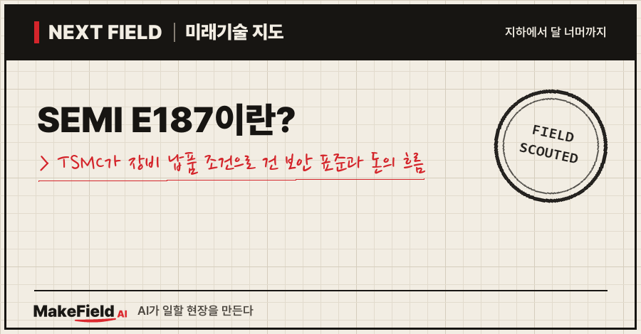
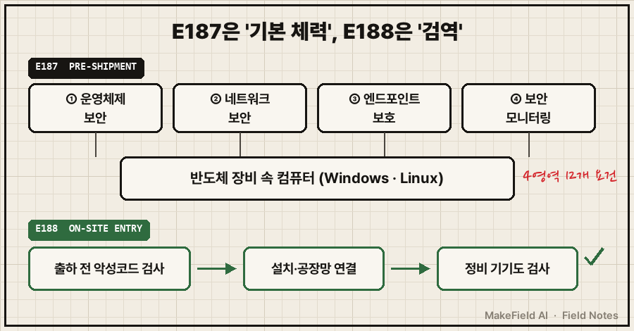
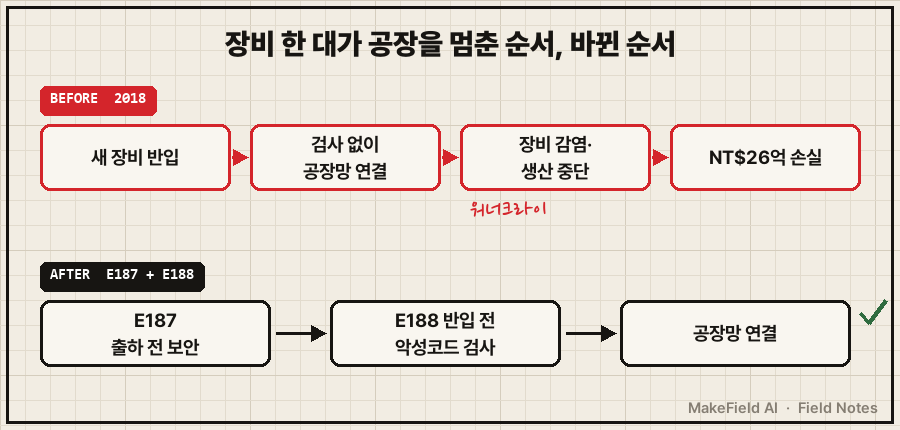
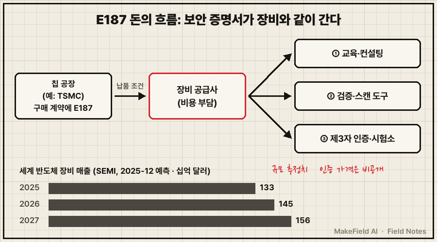

한 줄 요약: SEMI E187은 반도체 공장에 들어가는 장비의 컴퓨터가 갖춰야 할 최소 보안 조건을 정한 국제 업계 표준이에요. 세계 최대 파운드리 TSMC는 2023년부터 이 표준을 장비 구매 계약 요건으로 걸었고(TXOne, 2024-02), 대만 정부는 2026년 9월 이 표준의 인증 마크까지 공개했습니다(디지털투데이, 2026-09).
"반도체 장비에 왜 따로 보안 표준이 필요하지?" 싶은 분, 그리고 장비 한 대를 팔 때 이제 '보안 증명서'가 같이 따라가야 하는 이유와 그 사이에서 누가 돈을 버는지 궁금한 분을 위한 글입니다. 2026년 11월 기준 공개 자료로 풀어볼게요.
1. SEMI E187이란 무엇인가요
SEMI E187이란 반도체 제조 장비에 들어 있는 Windows·Linux 컴퓨터가 공장 네트워크에 붙기 전에 갖춰야 할 공통 최소 보안 요건을 정한 사양이다. 업계 단체 SEMI가 2022년 초 첫 사이버보안 표준으로 E188과 함께 발행했어요(SEMI, 2022-03).
💡 SEMI — 전 세계 반도체 장비·소재 회사들이 모인 업계 협회. 장비끼리 말이 통하도록 규격(표준)도 만든다.
💡 파운드리 — 다른 회사가 설계한 반도체를 대신 만들어 주는 위탁생산 공장. TSMC가 세계 1위다.
반도체 장비는 겉으로는 거대한 기계지만, 안에는 장비를 조종하는 일반 컴퓨터가 들어 있어요. 이 컴퓨터가 공장 네트워크에 연결되는 순간, 장비 한 대의 허술함이 공장 전체의 구멍이 됩니다. E187은 그 컴퓨터에 대해 운영체제 보안, 네트워크 보안, 엔드포인트 보호, 보안 모니터링 네 영역을 요구해요(SEMI, 2022-03). 인증기관 뷰로베리타스는 이 네 영역 아래 보안 요건이 모두 12개라고 설명합니다(Bureau Veritas, 2023-10).
💡 엔드포인트 보호 — 장비에 붙은 컴퓨터 한 대 한 대마다 백신·실행 통제를 거는 것. 아파트 공동현관과 별개로 집집마다 문을 잠그는 일과 같다.
💡 보안 모니터링 — 이상한 접속이나 동작이 생기면 기록하고 알려 주는 감시 기능.
짝꿍 표준 E188은 '들여올 때'를 다뤄요. 장비 공급사가 출하 전에 장비와 정비용 기기를 악성코드 검사하도록 최소 검사 요건을 정하고, 취약점 판단에는 미국 국립표준기술연구소(NIST)의 공개 기준을 참고하게 했습니다(SEMI, 2022-03). 보안업체 TXOne은 E188이 신규·기존 장비의 컴퓨터, 컨트롤러, PLC까지 모든 연산 장치를 대상으로 한다고 해설해요(TXOne, 2024-02).
💡 PLC — 모터·밸브·로봇팔을 정해진 순서대로 움직이는 산업용 소형 컴퓨터.
| 구분 | SEMI E187 | SEMI E188 |
|---|---|---|
| 한 줄 정의 | 장비 컴퓨터의 '기본 체력' 기준 | 장비를 들여올 때의 '검역' 기준 |
| 언제 | 장비 개발·출하 단계 | 납품·설치·정비 단계 |
| 대상 | Windows·Linux가 깔린 장비 컴퓨터 | 컴퓨터·컨트롤러·PLC 등 연산 장치 전반 |
| 핵심 요구 | 운영체제·네트워크·엔드포인트·모니터링 4영역 | 출하 전 악성코드 검사·취약점 점검·네트워크 설정 문서 |
(출처: SEMI 2022-03, TXOne 2024-02)

그림을 글로 옮기면, 위쪽은 장비 컴퓨터가 출하 전에 갖춰야 할 네 가지 보안(E187), 아래쪽은 장비가 공장에 들어오고 정비받을 때마다 거치는 악성코드 검사 흐름(E188)이에요.
2. 왜 생겼나요 — 장비 한 대가 공장을 멈춘 2018년
E187이 생긴 직접 계기는 2018년 8월 TSMC 공장 장비가 랜섬웨어에 감염돼 생산이 멈춘 사건이다. 대만 일간지 타이베이타임스에 따르면 워너크라이(WannaCry) 웜이 TSMC 팹 장비 일부를 감염시켰고, 회사는 이 사건으로 NT$26억(약 8,429만 달러)의 손실을 장부에 반영했어요(Taipei Times, 2018-11-16). 원화로는 약 1,180억 원입니다(1,400원/달러 단순 환산).
💡 랜섬웨어 — 컴퓨터를 잠그거나 파일을 암호화하고 '몸값'을 요구하는 악성 프로그램.
💡 워너크라이(WannaCry) — 2017년 전 세계로 퍼진 랜섬웨어. 패치 안 된 Windows를 타고 스스로 번지는 '웜' 방식이다.
미국 제조 전문 매체 매뉴팩처링다이브는 당시 감염 장비의 약 80%가 3일 안에 복구됐다고 전하면서, 첨단 칩용 12인치 웨이퍼 한 장의 가치가 최대 2만 달러(약 2,800만 원, 단순 환산)에 이른다고 설명했어요. 당시 TSMC 최고경영자는 이 사건을 두고 "전적으로 우리의 과실"이라고 말했습니다(Manufacturing Dive, 2025-07-24). 멈춘 시간만큼 수천만 원짜리 웨이퍼가 줄줄이 손실이 되는 구조라, 장비 보안이 곧 생산성 문제가 된 거예요.
SEMI도 E187 발표문에서 "2018년 한 대형 파운드리가 랜섬웨어에 감염된 기계를 조사하느라 생산을 멈춰야 했다"며 이 표준을 공장 장비 공격을 막기 위한 장치로 소개했어요. E187은 TSMC와 대만 공업기술연구원(ITRI)이 이끈 태스크포스가, E188은 인텔과 장비 소프트웨어 회사 시메트릭스가 이끈 태스크포스가 만들었습니다(SEMI, 2022-03).

그림을 글로 옮기면, 위 줄은 검사 없이 연결된 장비가 공장 전체를 멈추게 한 2018년의 순서, 아래 줄은 출하 전 보안(E187)과 반입 전 검사(E188)를 먼저 거치게 바꾼 지금의 순서예요.
3. 돈의 흐름 — 누가 사고, 누가 파나요
E187의 비용은 장비 공급사가 내고, 그 돈은 교육·컨설팅, 검증 도구, 제3자 인증·시험 세 갈래로 흘러간다. 칩 공장이 구매 계약에 E187을 넣으면, 장비를 팔고 싶은 회사는 그 요건을 맞추고 증명할 비용을 스스로 치러야 하기 때문이에요.
판의 크기는 장비 시장이 보여 줍니다. SEMI는 2025년 세계 반도체 제조 장비 매출을 사상 최대인 1,330억 달러(전년 대비 13.7% 증가)로 내다봤고, 2026년 1,450억 달러, 2027년 1,560억 달러를 예측했어요. 장비 투자 상위 3개 지역으로는 중국·대만·한국을 꼽았습니다(SEMI, 2025-12-16). 다만 E187 대응 시장만 따로 떼어 낸 규모 추정치나 인증 비용 공개 가격은 이번 조사에서 찾지 못했어요.

아래 기업명은 산업 구조를 설명하기 위한 예시이며 투자 판단과 무관합니다.
| 파는 쪽 | 무엇을 파나 | 예시(공개 자료 기준) |
|---|---|---|
| 교육·컨설팅 | 장비사 개발팀에 요건을 풀어 주고 위험을 평가 | 뷰로베리타스 — 교육·컨설팅, 장비 위험 평가 제공 |
| 검증 도구 | 장비 컴퓨터의 보안 상태·악성코드를 점검하는 소프트웨어·기기 | TXOne 등 OT 보안 회사 |
| 제3자 인증·시험 | 장비가 E187을 충족하는지 심사하고 증명서 발급 | 뷰로베리타스·인터텍(평가 서비스), 대만 인증기관 후보 TCA·UL·SGS·TÜV SÜD |
(출처: Bureau Veritas 2023-10, Manufacturing Dive 2025-07-24, 대만 디지털발전부 공지 2026-02 게시)
💡 OT(운영 기술) — 공장·발전소처럼 물리 설비를 직접 움직이는 기술. 사무용 IT와 구분해 부른다.
💡 제3자 인증 — 파는 회사도 사는 회사도 아닌 독립 기관이 '기준을 지켰다'고 확인해 주는 것. 중고차 성능점검표와 비슷하다.
4. 누가 하고 있나요 — 대만이 국가 단위로 판을 깐다
E187은 대만에서 칩 공장·정부·인증기관이 한 줄로 묶여 '국가 인증 제도'로 커지는 중이다.
- TSMC: 2022년 E187 대응 가이드를 만들고 2023년 구매 계약 요건으로 공식 편입했어요(TXOne, 2024-02). 매뉴팩처링다이브는 E187이 핵심 구매 요건이 돼 공급망 전반에 적용되고 있다고 전했습니다(Manufacturing Dive, 2025-07-24).
- 첫 인증 장비사: 2023년 10월 뷰로베리타스는 대만 장비사 2곳(Gallant Precision Machining, Control Technology)에 세계 첫 E187 적합 인증을 줬다고 발표했어요(Bureau Veritas, 2023-10).
- 대만 정부: 대만 디지털발전부 장관은 이 표준이 "장비 공급사에 사이버보안 인증 취득을 요구"한다며, 앞으로 해외 반도체 공급망의 기본 보안 요건이 될 수 있다고 말했어요. 시험소 후보로는 대만 사이버보안기술연구소(CSTI)·ITRI 계측표준센터·AAA Security가 거론됐습니다(대만 디지털발전부, 2026-02 게시).
- 인증 마크: 2026년 9월 4일 세미콘 타이완 보안 포럼에서 디지털발전부와 SEMI가 E187 인증 마크를 공개했어요. 한 달 앞서 8월에는 E187 시험소가 문을 열었고, 인증기관 TCA는 이르면 10월 인정을 받을 것으로 예상되며, 첫 인증 제품은 연내 나올 수 있다는 전망입니다. 델타전자 등의 장비가 이미 시험을 의뢰했다고 해요(디지털투데이, 2026-09-08).
💡 시험소 / 인증기관 — 시험소는 실제로 장비를 검사해 결과를 내는 곳, 인증기관은 그 결과를 보고 증명서를 내주는 곳이다. 둘 다 정부가 인정한 곳이어야 한다.
5. 언제 오나요, 한계는 없나요
대만과 TSMC 공급망에서는 이미 '지금의 조건'이고, 그 밖에서는 아직 '번져 가는 중'이다. 반대 근거도 함께 봐야 해요.
| 구분 | 확인된 것 | 아직 불확실한 것 |
|---|---|---|
| 의무화 | TSMC 구매 계약 요건(2023~) | 다른 칩 공장의 계약 조건 공개 여부 |
| 인증 제도 | 대만 인증 마크 공개(2026-09), 시험소 개소(2026-08) | 첫 인증 제품 실제 출하 시점(연내 '가능' 전망) |
| 한국 | 장비 투자 상위 3개 지역(SEMI 2025-12) | 국내 칩 대기업이 협력사에 E187을 요구하는지 — 이번 조사에서 공개 자료를 찾지 못함 |
| 비용 | 인증·평가 서비스 존재 | 인증 1건당 가격·소요 기간 공개 자료 없음 |
정리하면, E187은 법이 아니라 업계 표준이에요. 강제력은 '사는 쪽'의 계약서에서 나옵니다. 그래서 대만 밖으로 얼마나 빨리 퍼질지는 각국 칩 공장이 구매 조건에 넣느냐에 달려 있고, 이 부분은 아직 공개 자료로 확인되지 않았어요. 디지털 제품 전반에 보안 의무를 지우는 EU 사이버복원력법(CRA)이 '법'으로 시장 문을 잠그는 방식이라면(이전 글 'EU 사이버복원력법(CRA)이란?' 참고), E187은 '고객 계약'으로 잠그는 방식인 셈입니다.
자주 묻는 질문
Q1. SEMI E187은 법인가요?
아니요. 업계 단체 SEMI가 만든 자율 표준이에요. 다만 TSMC처럼 구매 계약에 넣으면 그 고객에게 장비를 팔려는 회사에는 사실상 필수 조건이 됩니다.
Q2. E187과 E188은 무엇이 다른가요?
E187은 장비 컴퓨터가 출하될 때 갖춰야 할 보안 '기본 체력'(4영역 12개 요건), E188은 장비를 납품·설치·정비할 때 악성코드를 들이지 않는 '검역' 절차예요. 둘은 2022년 함께 발행됐습니다.
Q3. 왜 대만이 이렇게 앞서 있나요?
2018년 TSMC 공장 장비 감염(NT$26억 손실)을 직접 겪었고, TSMC가 표준 제정을 이끌었기 때문이에요. 이후 정부(디지털발전부)가 인증 마크·시험소·인증기관까지 국가 제도로 묶고 있습니다.
오늘의 용어 정리
| 용어 | 쉬운 말 |
|---|---|
| SEMI E187 | 반도체 장비 컴퓨터의 최소 보안 기준(운영체제·네트워크·엔드포인트·모니터링) |
| SEMI E188 | 장비를 들여오고 정비할 때 악성코드를 막는 검사 기준 |
| SEMI | 반도체 장비·소재 업계 협회이자 표준 단체 |
| 파운드리 | 남의 설계로 반도체를 대신 만들어 주는 위탁생산 공장 |
| 랜섬웨어 / 워너크라이 | 컴퓨터를 잠그고 몸값을 요구하는 악성코드 / 2017년 퍼진 대표적 랜섬웨어 |
| 엔드포인트 보호 | 장비 컴퓨터마다 거는 백신·실행 통제 |
| 보안 모니터링 | 이상 접속·동작을 기록하고 알려 주는 감시 기능 |
| PLC | 기계를 순서대로 움직이는 산업용 소형 컴퓨터 |
| OT(운영 기술) | 물리 설비를 직접 움직이는 기술 |
| 제3자 인증 | 독립 기관이 기준 충족을 확인해 주는 것 |
| 시험소 / 인증기관 | 실제로 검사하는 곳 / 결과를 보고 증명서를 내주는 곳 |
장비 하나가 공장을 멈출 수 있다는 걸 알게 된 산업은, 결국 '장비와 함께 보안 증명서를 사는' 쪽으로 움직이고 있어요. 다음 Next Field에서는 이런 보안 요건이 칩 공장 밖, 일반 공장 기계 쪽에서는 어떤 모양으로 번지고 있는지 이어서 살펴볼게요.
여러분 주변의 장비 납품 계약서에도 '보안 요건' 항목이 들어오기 시작했나요?
MakeField AI는 어렵고 낯선 산업 기술을 쉬운 말로 풀어 정리합니다 → https://makefield.ai
출처
[1] SEMI Standards Watch(2022-03) — E187·E188 첫 발행, E187 4대 영역, TSMC·ITRI 주도 개발, E188 출하 전 악성코드 검사 요건, 2018년 대형 파운드리 랜섬웨어 생산 중단 언급
→ https://semi.org/en/standards-watch-2022-March/SEMI-publishes-first-cybersecurity-standards
[2] Taipei Times(2018-11-16) — TSMC가 2018년 8월 바이러스 감염으로 NT$26억(8,429만 달러) 손실 반영, 워너크라이가 팹 장비 일부 감염
→ https://www.taipeitimes.com/News/biz/archives/2018/11/16/2003704292
[3] Manufacturing Dive(2025-07-24) — 감염 장비 약 80% 3일 내 복구, 첨단 칩 12인치 웨이퍼 최대 2만 달러, TSMC 계약의 E187 의무화, 뷰로베리타스·인터텍 평가 서비스
→ https://www.manufacturingdive.com/news/semiconductor-cybersecurity-tsmc-semi-consortium/753133/
[4] TXOne(2024-02) — TSMC 2022년 E187 가이드 작성·2023년 구매 계약 요건 편입, E188 대상(컴퓨터·컨트롤러·PLC, 신규·기존 장비)
→ https://www.txone.com/blog/how-semi-e187-and-e188-standards-elevate-cybersecurity-in-semiconductor-industry/
[5] Bureau Veritas(2023-10) — E187 4영역 12개 요건, 세계 첫 E187 적합 인증 대만 장비사 2곳, 교육·위험평가·외부 심사 서비스
→ https://www.cps.bureauveritas.com/newsroom/bv-provides-semi-e187-services
[6] 대만 디지털발전부(2026-02 게시) — 장비 공급사 인증 취득 요구, 해외 공급망 기본 요건 가능성, 인증기관·시험소 후보
→ https://moda.gov.tw/en/ADI/news/latest-news/18266
[7] 디지털투데이(2026-09-08) — 2026-09-04 E187 인증 마크 공개, 8월 시험소 개소, TCA 인정 예상 시점, 연내 첫 인증 제품 전망
→ https://www.digitaltoday.co.kr/en/view/101150/taiwan-led-semiconductor-security-standard-semi-e187-launches-first-certified-products-due-this-year
[8] SEMI(2025-12-16) — 세계 반도체 장비 매출 2025년 1,330억 달러(+13.7%), 2026년 1,450억·2027년 1,560억 달러 예측, 투자 상위 지역 중국·대만·한국
→ https://www.aap.com.au/aapreleases/cision20251216ae45080